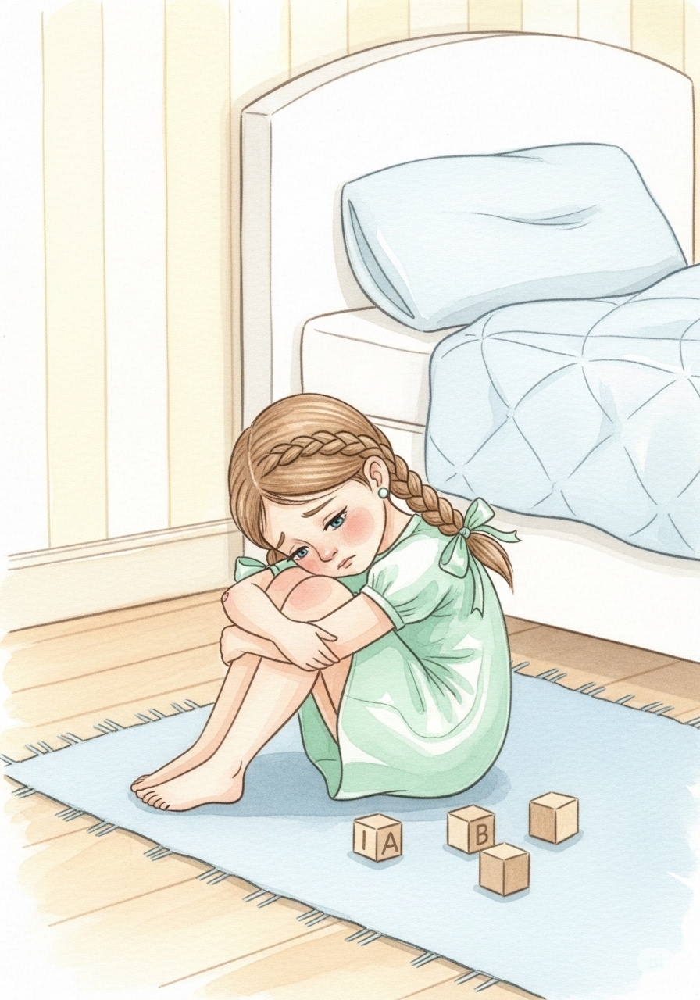
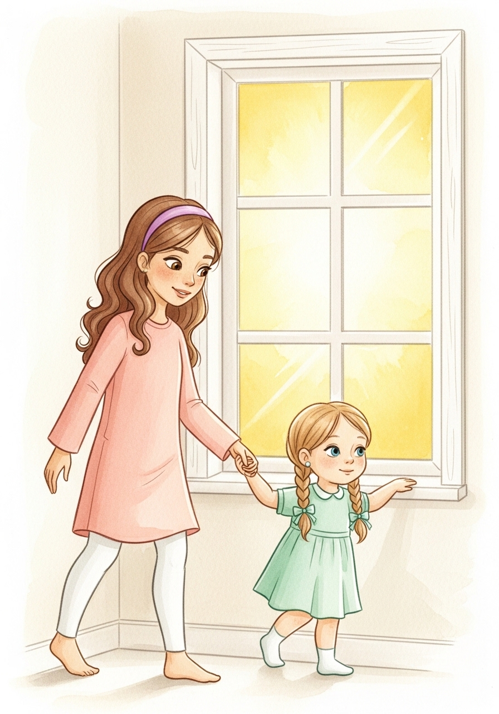
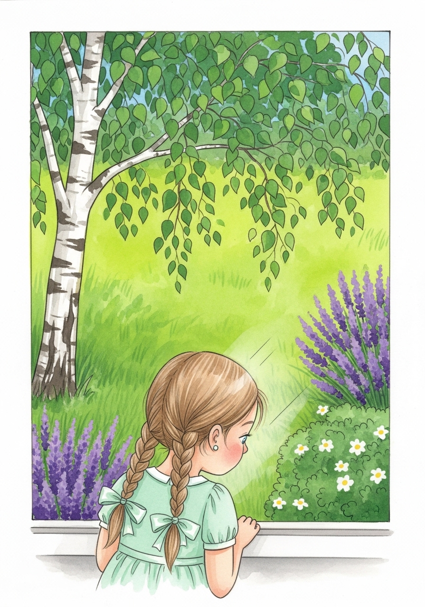
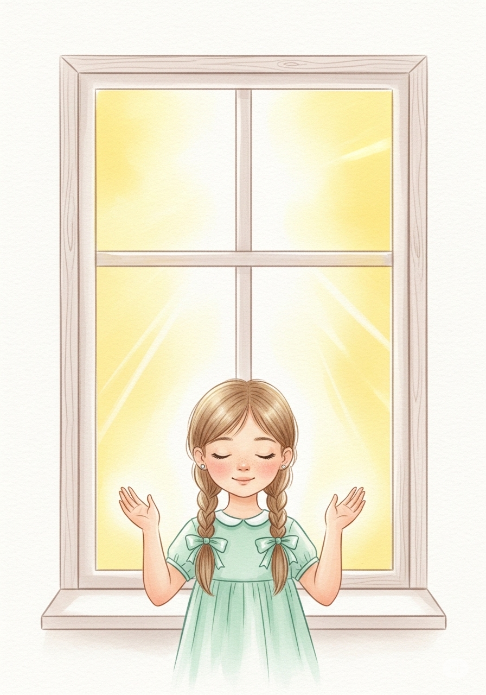
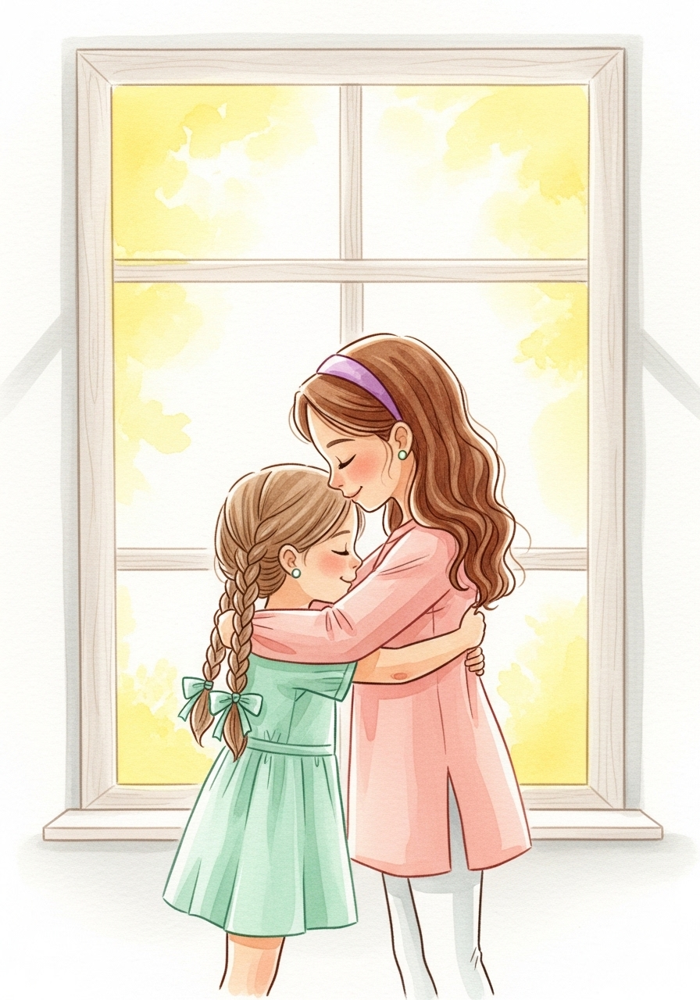

1

В нача́ле О́ле бы́ло гру́стно.
Most of the words in this story should feel familiar from the Creation story we read in class.
In this assignment, every important word has a tooltip. Hover your mouse (or tap on mobile) to see the base form and its English meaning.
Your job is to read and translate the story, and notice how words change. Even if you don’t know all grammar rules yet, you can still understand the meaning if you recognize the base form.
A word form can change because of things like: tense (past/present/future), voice (active/passive), person (1st/2nd/3rd), number (singular/plural), gender, case, and other grammatical categories. Usually you can understand the meaning without knowing the exact reason for the change.

В нача́ле О́ле бы́ло гру́стно.

Сестра О́ли А́ня сказа́ла:
— Посмотри́ в окно́.

О́ля посмотре́ла в окно́.
Она́ уви́дела не́бо и зе́млю.
В не́бе све́тило со́лнце.
На земле́ она́ уви́дела расте́ния и живо́тных.
Она́ уви́дела люде́й.

Лицо́ О́ли освети́ла улы́бка.

А́ня сказа́ла:
— Сла́ва Бо́гу за э́тот чу́десный де́нь!
After you read and translate the story, do the exercises below.
Change the story so it is about two brothers, not two sisters. Replace: Оля → Олег, Аня → Андрей. Fix the words that must change (gender/ending), for example: гру́стно / гру́стен, сказа́ла / сказа́л, etc.